Disengaged
No valid leader relationship. The follower holds rather than extrapolating motion from stale perception.
Connected autonomy · 2023–2024
Can a group of small autonomous vehicles follow a leader, react coherently to a local obstacle, and resume without requiring a mechanically coupled platoon?
Auto-Platoon is a physical two-robot leader–follower system organized around “software latching”: explicit engage, follow, pause, disengage, and resume transitions shared through a networked coordination layer. The project integrates learned detection, image embeddings, monocular depth, feature tracking, Kalman estimation, obstacle sensing, and low-level motion.
Research premise
A safe platoon is not merely a follower controller. It is a distributed agreement about when the group is engaged, when one agent’s observation should stop everyone, and when the formation may resume.
Core idea
The perception stack proposes a relationship between leader and follower. The latch turns that continuous, uncertain estimate into an explicit coordination state. A robot may be visible without the platoon being engaged, and a cleared obstacle does not imply immediate motion until the re-engagement conditions are satisfied.
No valid leader relationship. The follower holds rather than extrapolating motion from stale perception.
Identity, distance, and communication conditions support a leader–follower relationship; following commands are permitted.
An obstacle or peer-stop message suppresses motion across the platoon while preserving the coordination context.
Perception and estimation re-establish the leader and safe spacing before motion resumes.
The latch returns to an engaged state only after the relevant obstacle and tracking conditions clear.
The state machine converts a local observation into a coordinated response instead of relying on independent reactive controllers.
Architecture
The stack uses multiple perception routes because no single signal is sufficient across all situations. Appearance maintains identity, features support tracking, monocular depth estimates spacing, and obstacle sensing can override the following objective.
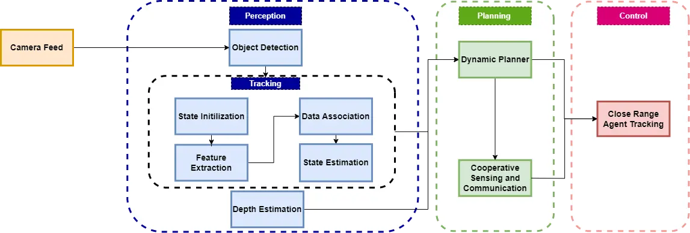
| Module | Purpose | Failure it addresses |
|---|---|---|
| Custom YOLOv7 | Detect the leader vehicle and relevant scene objects. | Initialization and reacquisition after tracking loss. |
| Feature tracking | Maintain the target between heavier detections. | Frame-to-frame identity continuity. |
| Image embedder | Compare appearance for leader identity. | Latching onto the wrong similar object. |
| MiDaS depth | Estimate relative separation from monocular imagery. | Following too closely or losing useful spacing. |
| Kalman filter | Regularize noisy position and motion estimates. | Control oscillation from frame-level noise. |
| Obstacle and peer messages | Propagate stop and resume state. | One follower continuing while another must stop. |
Architecture breakdown
I designed the overall process architecture and the published subsystem architectures: the dynamic planner, cooperative sensing and communication topology, and close-range controller. The implementation and paper were collaborative; the contribution here is stated at the architecture level rather than implied by a generic system description.
A custom YOLOv7 model initializes the leader. MobileNetV2 embeddings and cosine similarity associate it across frames, while a Kalman filter estimates centroid, scale, and motion. MiDaS supplies the relative depth used downstream.
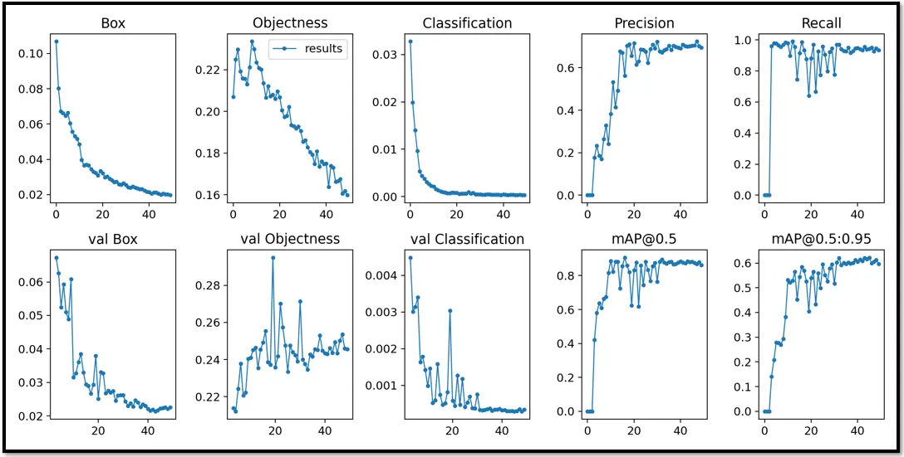
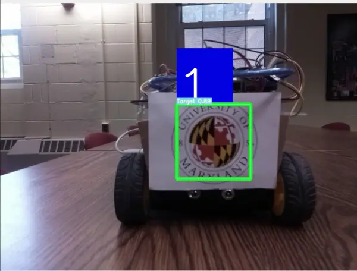
Tracked target state and depth enter a planner that distinguishes a leader from an obstacle. A valid leader produces a follow plan; an unsafe depth produces stop-and-proceed behavior; target loss triggers leader search.
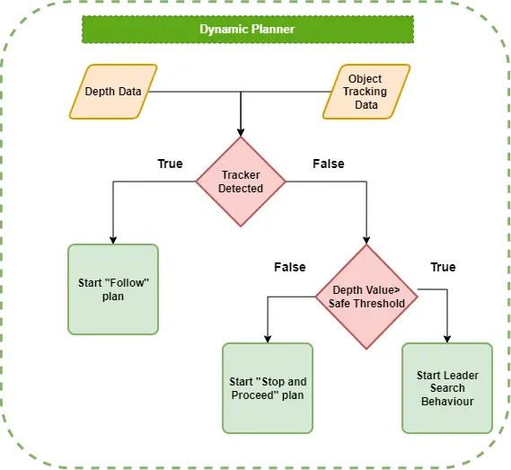
The main server processes images and returns tracking outputs. Followers report status to the leader’s local server and read the current system state, allowing one agent’s obstacle event to stop the coordinated system.
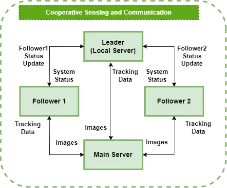
The controller combines target state, IMU orientation, and monocular depth. It corrects angular misalignment, evaluates the leader-distance threshold, then commands trace or stop behavior.
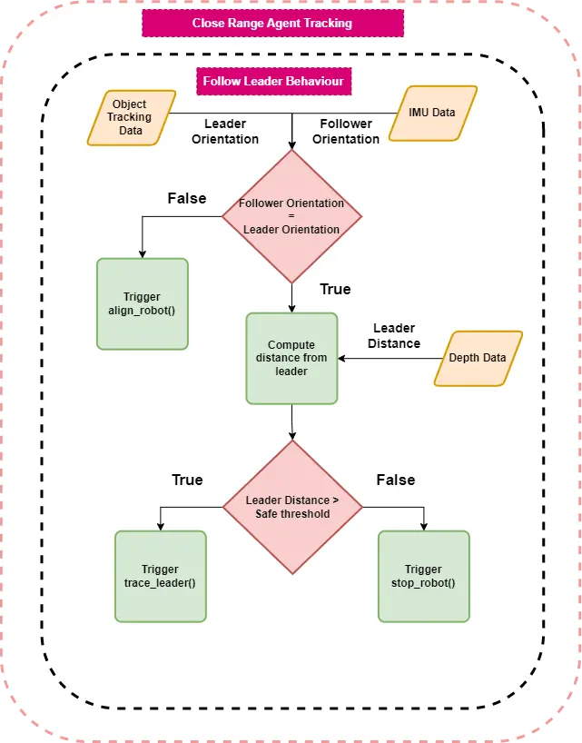
The page now retains the artifacts that connect the architecture to the physical result: dataset construction, temporal tracking, depth estimation, and detector outputs.
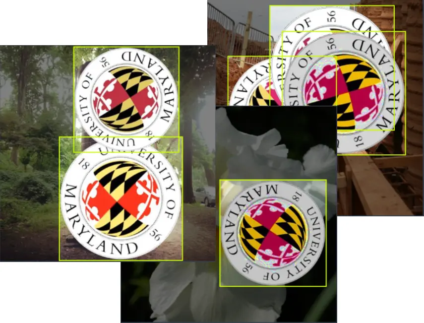
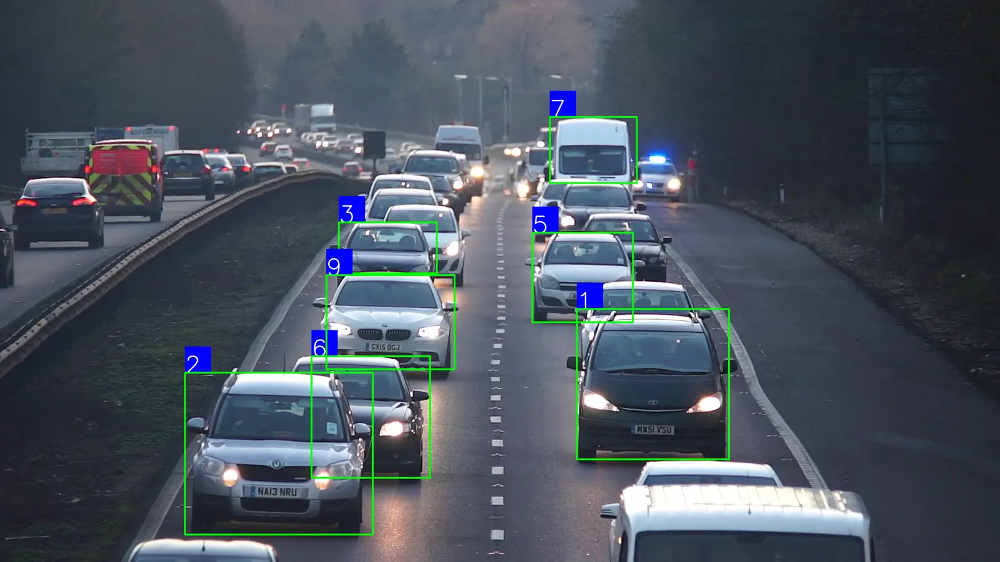
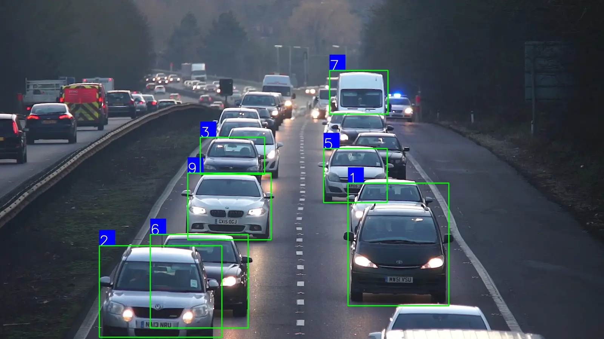
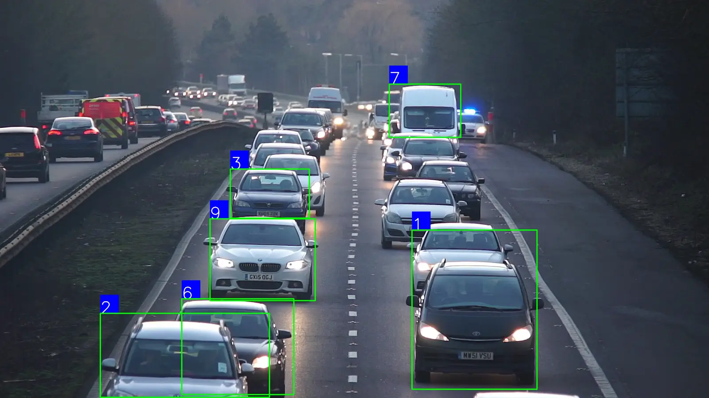
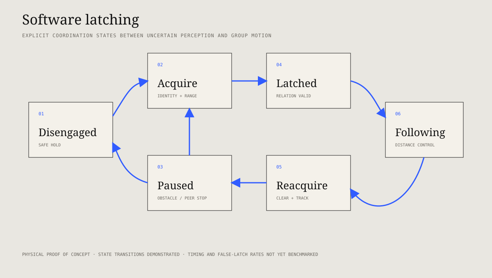
Physical implementation
A host computer performs the heavier perception and state logic. Raspberry Pi computers on the leader and follower bridge network decisions to local sensors and motors.
Python, OpenCV, learned models, socket communication, and state estimation run on the central machine.
The leader supplies the behavior that followers reproduce while also responding to coordinated stop messages.
The follower estimates separation, commands its motors, detects dynamic obstacles, and publishes state changes back to the group.
Detection, appearance, and temporal features establish the candidate leader before latching.
Monocular depth and filtered image measurements approximate the state required by the following controller.
The follower advances, holds, or slows as the estimated gap changes.
A dynamic obstacle triggers a pause message so the leader and other followers do not continue independently.
After the obstacle clears and the leader remains tracked, the latch permits coordinated motion again.
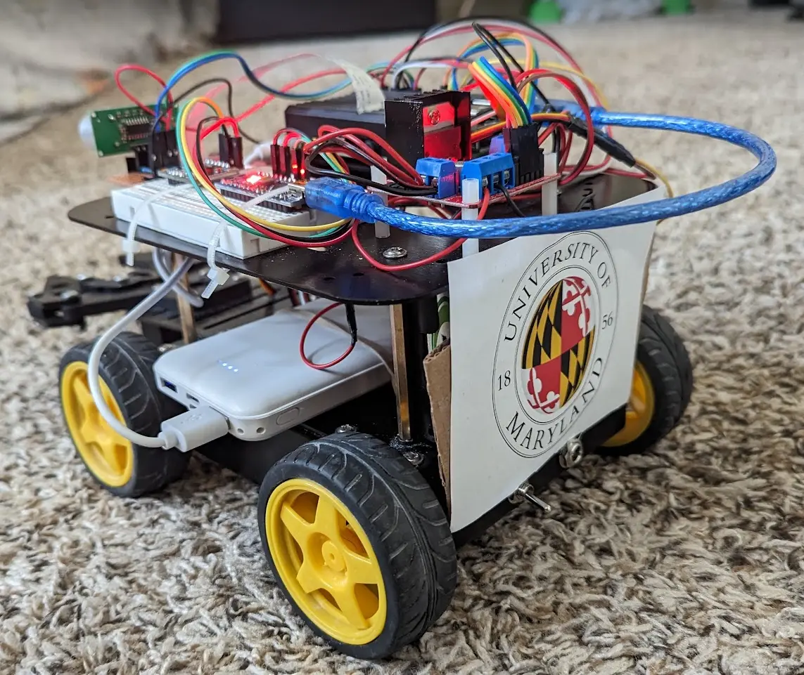
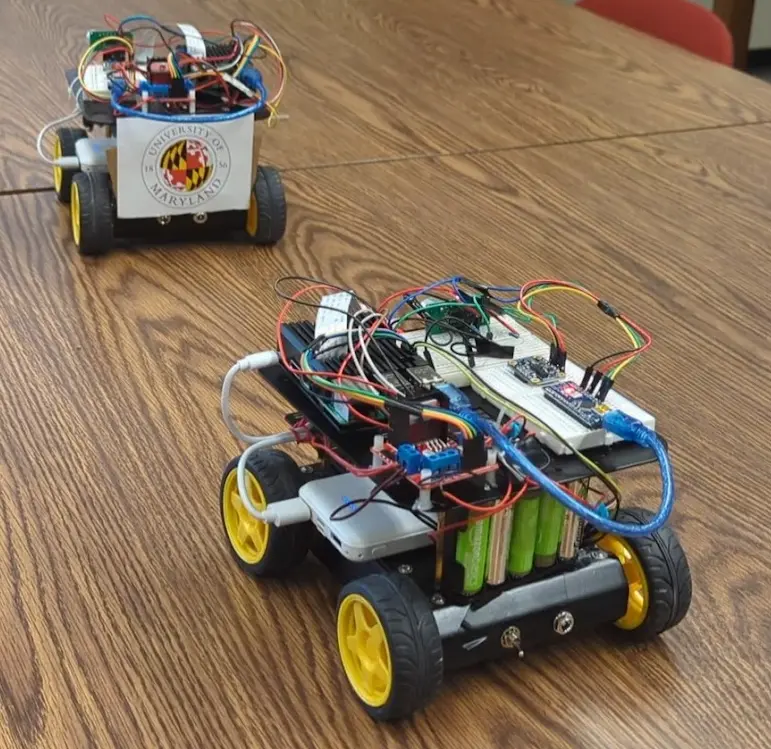
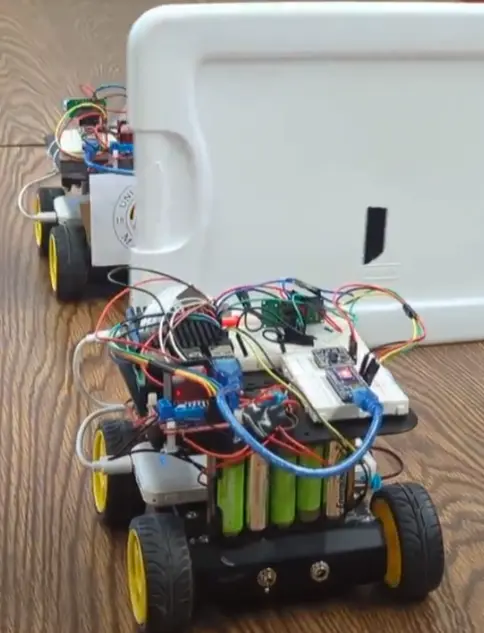
Evidence
The available artifact demonstrates the complete state sequence on two robots: leader acquisition, following, obstacle-triggered group stop, and automatic resume. The paper and repository establish integration; they do not report a sufficiently controlled repeated-trial matrix for statistical performance claims.

Extracting the state transition from the video makes the implementation visible: nominal spacing, obstacle introduction, group pause, obstacle clearance, and resumed following.
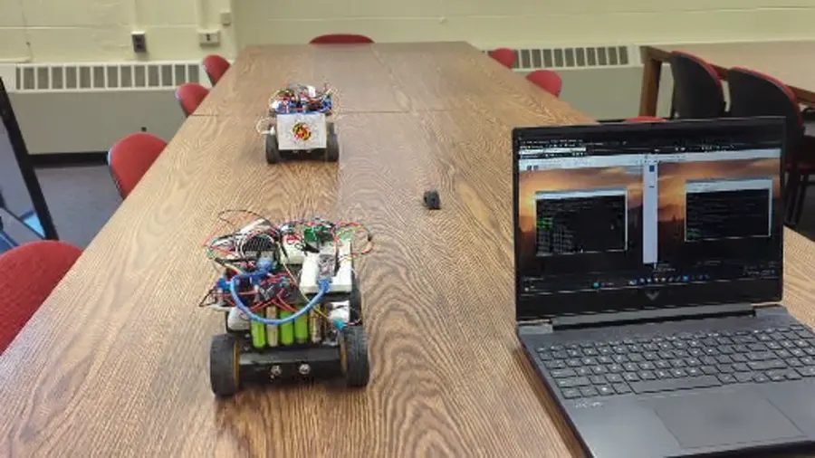
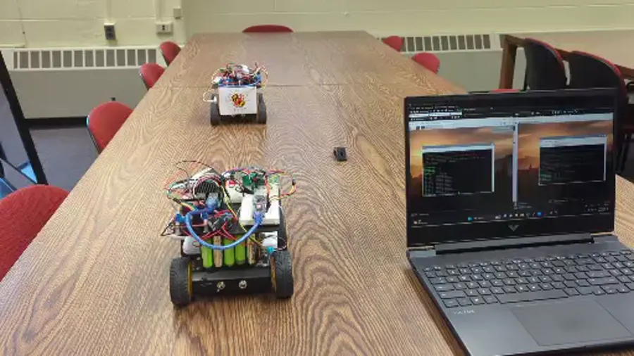
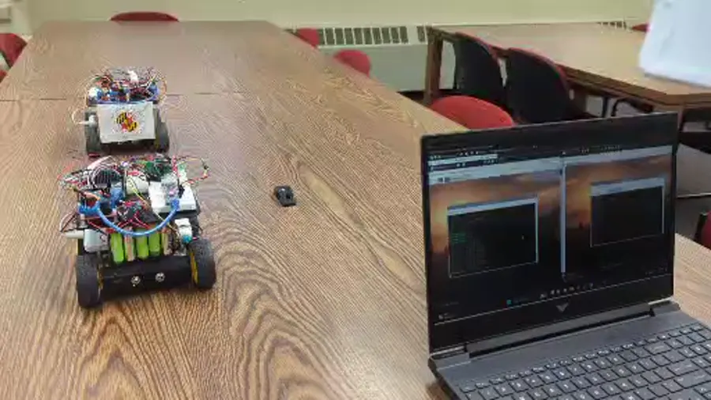
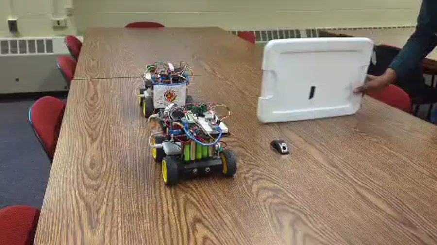
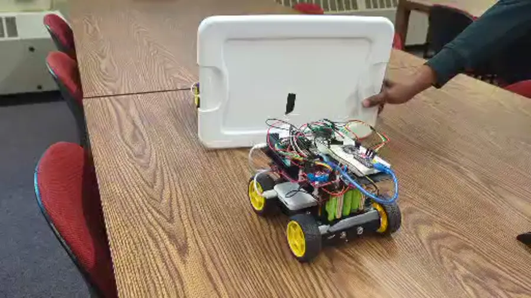
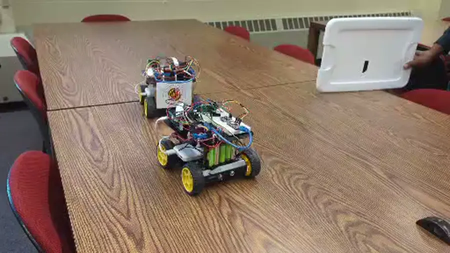
Physical video
Physical video
Physical video
Needs logs
Contribution and limitations
The project is best read as a connected-autonomy prototype: a complete perception-to-coordination-to-control stack and a concrete mechanism for turning confidence into group state.
Software latching made uncertainty and coordination explicit.
I designed the end-to-end process architecture and each published subsystem architecture: the perception-to-planning flow, dynamic planner, cooperative sensing and communication network, and close-range controller. I also integrated the perception, estimation, communication, and controller behavior into the physical leader–follower demonstration. The implementation and paper were collaborative, and all co-authors are credited above.
Limitations. Validation uses two small robots and a host-centric architecture. Scale to longer platoons, packet loss, network partitions, outdoor conditions, heterogeneous robots, high speed, and formal string stability was not established.
Tharun V. Puthanveettil, Abhijay Singh, Yashveer Jain, Vinay Bukka, and Sameer Arjun S. “Auto-Platoon: Freight by Example.” arXiv:2405.11659, 2024.